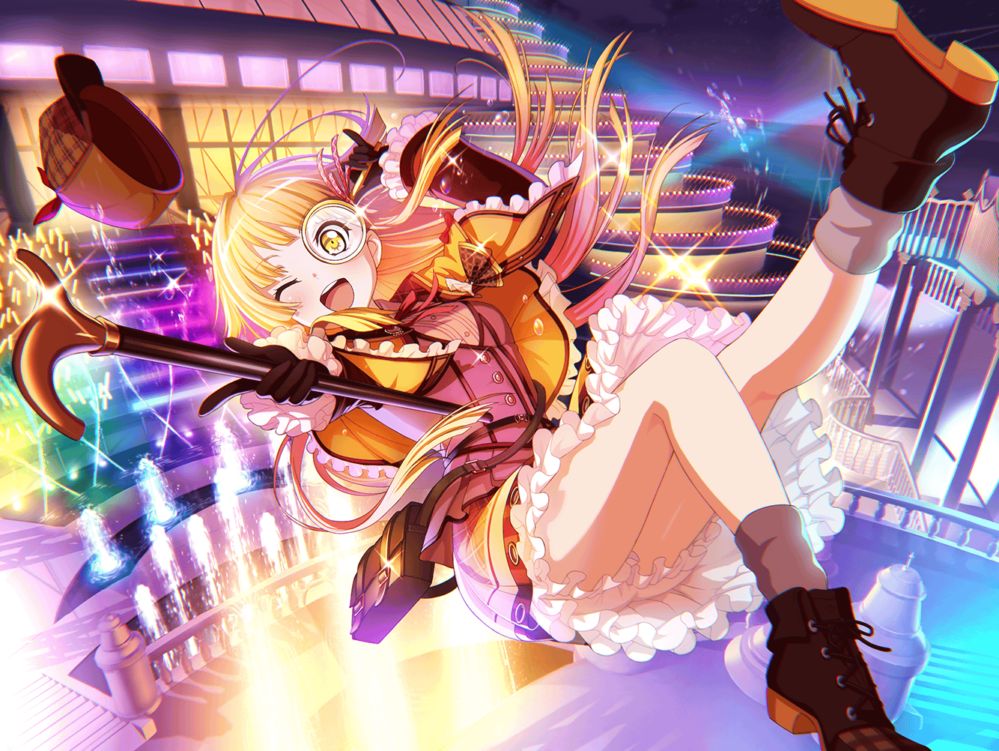

こころ
あら、{{userName}}。こんなところで奇遇ね！
こころ
……いつも以上にニコニコしてる？
それはそうよ！
ちょっと聞いてほしいの、とってもいいことがあったんだから！
こころ
実はこの前ね、バンドのメンバーと船に乗ったの！
こころ
船に乗った理由？
何だったかしら？ でもいいの！ そんなことは！
こころ
なんと怪盗さんが現れたのよ！
驚いたわ！
今まで船に乗ってても、そんなことなかったもの
こころ
しかも花音をさらっていったのよ！
こころ
ちょっとうらやましかったのは秘密よ
こころ
だって怪盗さんにさらわれるなんて、
そんな経験めったにできないもの！
こころ
それで、そのさらわれた花音を、
みんなで協力して、怪盗と色々な勝負をして、
見事、取り戻したわ！
こころ
どんな勝負をしたと思う？
想像もつかないみたいね、教えてあげるわ！
こころ
まず、最初に勝負したのははぐみだったわ！
カジノでルーレット勝負をしたの！
こころ
二択の運試しだったのだけど、
はぐみは負けてしまったの！ 健闘したと思うわ！
惜しかったもの！
こころ
次はあたしが勝負をしたわ！
儚いものを出せば勝ちだったのだけど……
こころ
あたしが選んだお面はちょっと違ったみたい……
こころ
怪盗さんにはあの儚さがわからなかったのね！
まあ、こういうこともあるわ！
こころ
その次の勝負は……誰だったかしら？
とにかく花音に愛の告白をしたの！
こころ
アレは……ひどかったわ！
こころ
結局勝負には勝てなかったけど、
最後はちゃんと怪盗さんを追い詰めたのよ！
こころ
船のテラスに出て言ってやったの！
『ここまでよ！』って！
こころ
あの時のあたし、すごくカッコよかったんだから！
あなたにも見せてあげたかったわ！
こころ
薫だけはちょうどその時いなかったのだけど、
あのシーンを見逃すなんてもったいないわね！
こころ
最後はクイズをしたんだけど、あたしが見事に正解を答えたの。
そしたら怪盗さんは花音を返して消えてしまったの！
こころ
あの船で起こった出来事のおかげで、
チームワークがより一層深まった気がするわ
こころ
合図しなくても音がそろって、
練習中もすごくいい空気が流れるの！
こころ
……そういえば、ミッシェルは一緒に船に乗らなかったけど
絆が深まった気がするわ。
なんでかしら？
こころ
……そうか！
あたし達の心がひとつになったから、
きっとミッシェルの心も一緒になったのね！
こころ
だってあたしたちとミッシェルの心はいつでも繋がっているもの！
こころ
でも今度は、ミッシェルも一緒に
ああいうワクワクに出会えたらいいわよね！
こころ
そういえば、お土産のお面をミッシェルにあげようと思って、
美咲に渡しておいたの
こころ
ミッシェルよろこんでくれたかしら？
美咲に聞きにいかなきゃいけないわ！
こころ
今度はどんなワクワクが待ってるのかしら？
考えるだけでも楽しくなってくるわね！
こころ
もしかしたら、突然また誰かが現れたりするかもしれないわ！
こころ
次は海賊さんが出てきたりしたらどうしようかしら！
こころ
でもきっと大丈夫！
あたし達が力を合わせればどんなことでも乗りこえられるもの！
こころ
ねえ、あなたもそう思うでしょう！？
こころ
……そうだわ！
あなたも一緒に、
船に乗ってワクワクを体験しましょう！
こころ
ううん、あなただけじゃなく……世界中の人達もみんな！
一緒に船に乗って、ワクワクを体験したら仲良くなれると思うの！
こころ
そうなったらとっても大きな船が必要ね！
こころ
あ、でもまずは学校のみんなを連れていきたいわ！
こころ
その次はいつもライブに来てくれるお客さんね！
船の上の、笑顔になるライブにご招待よ！
こころ
こうしてどんどんたくさんの人を乗せていくのよ！
そうね、船の名前は『笑顔号』よ！
こころ
そして『笑顔号』が世界一周するころには、
世界中の人々がきっと笑顔になっているはずね！
こころ
素敵ね！
考えてたら、楽しくなってきちゃったわ！
こころ
こうしてはいられないわね！
今すぐ船の準備をしなくちゃ！
こころ
『笑顔号』の出港はここから始まるの！
こころ
あなたも乗るわよね、『笑顔号』！！